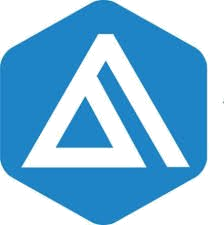

En AD Bienes Raíces no solo publicamos propiedades — las trabajamos. Conoce las dos formas en que puedes confiar tu patrimonio a nuestro equipo y elige la que mejor se adapta a lo que buscas.
Es una conclusión razonable. Más manos, más alcance. Pero en la práctica del mercado inmobiliario, la dinámica funciona diferente.
Cuando varios asesores manejan la misma propiedad simultáneamente, ninguno tiene certeza de recibir la comisión. Esa incertidumbre cambia su comportamiento: invierten menos tiempo, menos recursos y menos esfuerzo. La propiedad se convierte en un anuncio más — uno entre cientos — sin estrategia, sin seguimiento real y sin representación genuina de los intereses del propietario.
Adicionalmente, el mercado inmobiliario tiene una realidad que pocos propietarios conocen: la informalidad es frecuente. Un asesor sin la preparación adecuada puede, por presión o desconocimiento, orientar la operación de manera que no favorezca al propietario — sin que este último se dé cuenta hasta que ya es tarde.
Un asesor que trabaja en exclusiva sabe que cada peso invertido en tu propiedad tiene retorno directo para él. Por eso invierte: en fotografía profesional, en campañas de pauta, en tiempo de calidad con cada prospecto.
La exclusiva no reduce tu exposición — la maximiza con responsabilidad. Tienes un solo interlocutor que defiende activamente tus intereses, conoce tu propiedad a fondo y tiene todos los incentivos para lograr el mejor resultado posible para ti.
Además, en AD Bienes Raíces, la exclusiva no significa cerrar puertas: tu propiedad llega a toda la red del mercado — incluyendo más de 900 colaboradores de la AEINL.
Trabajar en exclusiva con un asesor preparado, respaldado y comprometido no es una restricción — es la forma más inteligente de proteger tu patrimonio.
Olvida coordinar con múltiples asesores cada vez que cambia el precio, hay una visita o se necesita un documento. Con exclusiva tienes un solo punto de contacto que centraliza toda la operación — menos fricción, más claridad y más tranquilidad para ti.
Tu asesor no solo presenta ofertas — las analiza, las negocia y te da su opinión profesional sobre cada una. Tienes a alguien en la mesa que trabaja para ti, con criterio y con conocimiento del mercado real.
En un mercado donde la falta de preparación es común, tener a un asesor certificado y respaldado institucionalmente reduce significativamente el riesgo de errores contractuales, valuaciones incorrectas o cierres que no corresponden al valor real de tu propiedad.
Un profesional comprometido hace el estudio correcto antes de publicar — no te dice lo que quieres escuchar, te dice lo que el mercado indica. Eso se traduce en un precio de salida competitivo que atrae compradores serios y reduce el tiempo en el mercado.
En exclusiva, el asesor coordina con contadores y notarios para explorar posibilidades de optimización fiscal: exención de ISR, esquemas de escrituración ventajosos y otras estrategias legales que pueden representar un ahorro real para el vendedor.
La meta de un asesor profesional no es cerrar rápido a cualquier precio — es cerrar bien. Eso significa que cada oferta se evalúa con rigor, que no se presiona al propietario a aceptar condiciones desfavorables y que el resultado refleja el valor real del inmueble.
Cuando una propiedad está en manos de muchos asesores a la vez, cada uno compite contra los demás — y esa competencia no siempre favorece al dueño. La presión por ser el primero en cerrar puede llevar a que se sugieran ofertas por debajo del valor real, con tal de concretar antes que otro. Un asesor en exclusiva no tiene ese conflicto: su único objetivo es el mejor resultado para ti.
Estos son los estándares que aplican en todas nuestras captaciones — el punto de partida antes de las diferencias entre modalidades.
Cada propiedad cuenta con un video de recorrido que permite a los prospectos conocer el inmueble antes de agendar visita, filtrando candidatos de mayor calidad desde el inicio.
Tu propiedad se publica en todos los portales activos del mercado desde el primer día, con ficha técnica completa y material visual de calidad.
ADBR publica propiedades diariamente en Instagram y Facebook — stories y reels — con un calendario de publicación estructurado. Tu propiedad forma parte de ese flujo desde el inicio.
Todos los asesores de AD Bienes Raíces tienen acceso a tu propiedad y pueden presentarla a sus clientes. La colaboración interna es parte del proceso estándar.
Antes de publicar, analizamos propiedades similares en la zona para establecer un precio de salida competitivo y fundamentado — no basado en expectativas, sino en datos reales.
Se explica al propietario toda la documentación necesaria, los pasos del proceso de venta y los pagos correspondientes — para que ninguna etapa sea una sorpresa.

AD Bienes Raíces forma parte de la Alianza de Empresarios Inmobiliarios de Nuevo León, una red de colaboración que integra a más de 900 asesores en la Zona Metropolitana de Monterrey. Esto significa que tu propiedad, sea cual sea la modalidad, tiene acceso a toda esa red desde el primer día.
Publicamos propiedades todos los días. Propiedades en exclusiva tienen lugar preferencial en el calendario.
Ambas son opciones legítimas. La diferencia está en el nivel de compromiso, inversión y acompañamiento que recibes de tu asesor.
La Captación Integral no es publicar y esperar — es un proceso activo con objetivos definidos por fase.
La primera etapa es la más estratégica. Preparamos la propiedad para el mercado: fotografía profesional, videorecorrido, inspección técnica, perfilamiento del comprador objetivo y lanzamiento de campañas de pauta en Meta Ads. El objetivo es generar visibilidad real y comenzar a recopilar datos del mercado.
Con el posicionamiento establecido, la segunda fase se concentra en convertir interés en visitas calificadas. Filtramos prospectos, agendamos citas y damos seguimiento puntual a cada candidato. Cada visita se documenta y se reporta.
La fase final es la más delicada. El asesor coordina la negociación entre las partes, acompaña la revisión de documentación legal y guía el proceso hasta la firma y entrega. Si la operación se concreta durante la exclusiva, es resultado directo del trabajo de posicionamiento, inversión y gestión activa realizado a lo largo del proceso.
No hay sorpresas. Aquí está exactamente lo que se paga, por qué se paga y cómo se distribuye.
Del precio final de venta, más IVA en caso de requerir factura. Se paga al asesor de ADBR que lleve al comprador que concrete la operación. Si un asesor externo presenta al comprador, ADBR cede el 50% de su comisión a ese asesor por la colaboración.
Del precio final de venta, más IVA en caso de requerir factura. La comisión refleja la inversión real del asesor: fotografía profesional, inspección técnica, pauta publicitaria, tiempo dedicado y plan de 6 meses de trabajo activo.
Las modalidades de captación para arrendamiento siguen una estructura diferente, con condiciones según el tipo de propiedad y duración del contrato. Próximamente publicaremos la guía completa de captación en renta. Por ahora, tu asesor puede orientarte directamente.
Si ya sabes qué modalidad se adapta mejor a lo que buscas para tu propiedad, el siguiente paso es simple: comunícate con tu asesor y coordina una visita al inmueble. Ahí comienza el trabajo real.